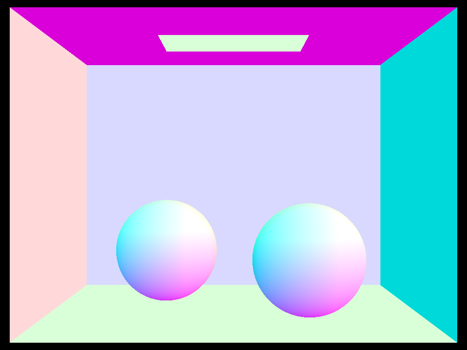
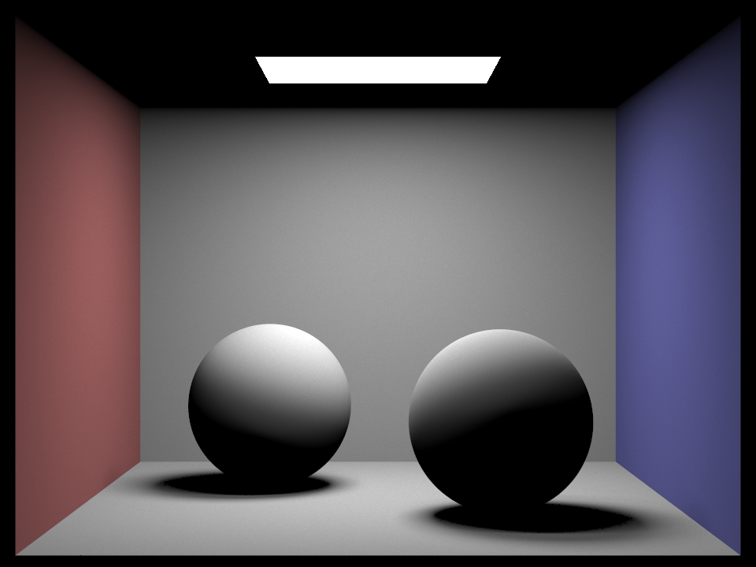
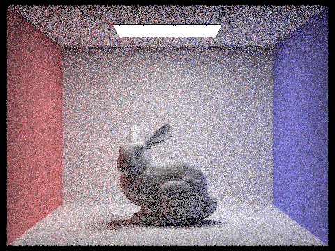

Use this section to write an overview of the assignment. All of the text in your write-up should be in your own words. If you need to add additional HTML features to this document, you can search the http://www.w3schools.com/ website for instructions. To edit the HTML, you can just copy and paste existing chunks and fill in the text and image file names appropriately.
If you are well-versed in web development, feel free to ditch this template and make a better looking page. Just make sure that you include all the components as we've laid them out here.
Part 1: Ray Generation and Intersection
In this part, we model a pinhole camera looking at the -z axis. Then for every pixel on the sample plane \((x, y)\), we first find their normalized value in respect to the sample buffer's width and height. Then we can use the normalized \((x, y)\), to find the corresponding position of the pixel on the camera plane. By this, we can specify a ray, which has an origin vector same as the camera's position, and a direction vector corresponding to the \((x, y)\) position in the camera plane ( we need to use the matrix c2w to convert them to the world coordinates, and them normalized them.)
Once we have the ray, the next step is to intersect with primitives. There are two primitives we need to consider: triangle and sphere. We use \(t\) to denote the length of the ray. For triangle, we first need to see whether \(t\) is positive, and whether the intersection \(o + t * d\) is inside the triangle by calculating the barycentric coordinates of that triangle using Moller Trumbore algorithm. For Sphere, there are possibly at most two intersections for a ray to intersect a sphere. We denote them as \((t1, t2)\). We use the formula \((o + t * d - c)^2 - R^2\) to calculate \(t1, t2\). If there are no real solutions or both \(t1\) and \(t2\) are negative, it means the ray doesn't intersect with the sphere. If one of the solution is negative, it means the ray origin is inside the sphere, which we don't consider in this project. If there are solutions, we take the smaller one to compute our intersection point.
Triangle intersection steps:
- 1. Get the positions \(P\) and Barycentric coordinates \(N\) of the vertices of triangle, as well as the origin and direction vector of the ray.
- 2. Build and solve the system of equations according to Moller Trumbore algorithm, get \(t, b0, b1, b2\), where \(b0, b1, b2\) are the barycentric position of the intersection points.
- 3. Test if (\t\) falls in the range\([min_t, max_t]\) and all \(b\) falls in the range \([0, 1]\) to make sure there is an intersection and it falls inside the triangle.
- 4. If there's a intersection, update ray's max_t to \(t\) and populate the correct attribute to Intersection object.
Sphere intersection steps:
- 1. Get the center and radius of the sphere, as well as the origin and direction vector of the ray.
- 2. Build and solve the quadratic formula to get the solutions, \(t1, t2\).
- 3. Make sure the formula actually has solution, otherwise it means there's no intersection.
- 4. Take the smaller t, and use this to calculate the intersection point. Update the ray's max_t accordingly, and populate the correct attributes to the Intersection object.
|

|

|
Part 2: Bounding Volume Hierarchy
BVH helps us rendering the image more quickly, in a way that if a ray doesn't intersect with the bounding volume, it doesn't intersect with any primitives inside that bounding volume. It takes 1:26.45 to render the cow before implement BVH, and after implementation, it only takes 0.1617s. BVH is a tree-like data structure, where each node is a bounding box, and it has two children, left and right, which are both bounding box. Only the leaf node actually contains the primitives we want to intersect.
BVH constructions steps:
- 1. Create a root node, creating bounding boxes for every primitive.
- 2. If the number of primitives is less than the max leaf size, then the node is a leaf node. We should return this node.
- 3. Else, we need to split the primitives. We take the midpoint of the largest dimension as our split point, and we recursively create left and right nodes based on the splited primitives, until the nodes contains the number of primitives less than max leaf size.
- 4. In the case where one of the children contains no primitive, we need to avoid it, because it will cause infinite recursion. In this case, we re-compute the midpoint as the average of the centroids of primitives to eliminate the empty child nodes.
After we construct the BVH, in next step we will recursively intersect the BVH using ray.
BVH intersections steps:
- 1. For every node, test if the ray intersects with the bounding box(detailed explanation later)
- 2. If the ray doesn't intersect with the bounding box, it can't intersect with any primitives in that node, so just return false.
- 2. If the ray does intersect with the bounding box, keep recursively intersects the ray with the node's left and right child, untils it reaches the leaf node.
- 3. If the ray intersect with the bounding box of the leaf node, run the intersection test to every primitives inside that leaf node.
- 4. Returns the closest hit point to the BVH of the ray. We don't explicitly do this, because every time the ray intersects the primitives inside the BVH, it updates its max_t according, and max_t can only decrease. Therefore, the max_t of the ray implicitly store the closet hit point.
Intersecting Bounding Box Steps
- 1. In order to compute the intersection of a bounding box, we can compute \(t\) for each dimensions' slabs, and find the intersection of all \(t\).
- 2. Compute \(tx_{min}, tx_{max}, ty_{min}, ty_{max}, tz_{min}, tz_{max}\), corresponding to \(yz, xy, xz\) slabs.
- 3. \(t_{min} = max(tx_{min}, ty_{min}, tz_{min})\), \(t_{max} = min(tx_{max}, ty_{max}, tz_{max})\)
- 4. If \(t_{min} < t_{max}\) and \([t_{min}, t_{max}]\) falls in the range \([min_t, max_t]\), then it is a valid intersection.

|
Time analysis with/without BVH
|
|

|
We can see that with BVH implemented, the total time takes to render cow.dae is greatly reduced. Although it takes time to build the BVH, the time is negligible comparing to the time we save. That's because we can stop keeping testing the ray once we don't intersect the bounding box, which saves a lot of time. While without implementing the BVH, we basically do ray test for every primitives inside the root node. The difference in averaged intersection tests per ray indicates that BVH saves many uncessary ray test.
Part 3: Direct Illumination
Uniform hemisphere sampling
- 1. Basically, we use Monte Carlo Integration to sample the ray from different angles origins from the hitting surface to another direction.
- 2. When the camera ray hits the surface, we sample a new ray (test_ray) to an angle using a probability density function. We then run the intersection test to see if the test_ray intersect with any primitives.
- 3. If test_ray intersections with a primitive, we get the emissions of that primitive, multiplies the reflectance of the hitting surface (bdsf), multiplies the cosine of the angle of the direction of test_ray, and finally divides the probability of choosing the angle. The result we get is the illumination of one single outgoing ray.
- 4. We then sum up all the illumination of outgoing rays we created, and average them to obtain the final hemisphere illumination of that pixel.
Importance sampling by sampling over lights
- 1. This is similar to uniform hemisphere sampling, but we only sampling light to the direction of light source. So compare to unifor hemisphere sampling, which the outgoing ray will always intersect with non-light source primitives, importance sampling will gives us with less error.
- 2. We first iterate through all light sources in the scene, then we taking ray samples leaving the hit point to the light source. If the light source is a delta light, we only take one sample. (because the light will be the same from different angles), otherwise, we take \(n\) number of samples randomly from the light source using a probability density function.
- 3. We then set the ray's max_t to be the distance from the hit point to the light source, because we don't want get sample from behind the light source. If the sampled outgoing ray doesn't intersect any primitives, which means the hit point is not blocked, we take the sampled spectrum, multiply with the bsdf on the surface and cosine of the incoming angle. Then we do a Monte Carlo Integration of all the samples we have to finally get the overall irradiance of that surface.
Notes:
- 1. In importance sampling over lights, sometimes the pdf will be 0, which will result white noisy pixel on our rendered. To avoid this, everytime we have 0 pdf, we just discard this sample and resample one.
- 2. Most of the bugs come from not using world coordinate and object coordinate correctly, which is really hard to debug.
- 3. When making new outgoing test ray, it is important to off the origin of the ray a little bit (specifically, by EPS_D * wi_world), to avoid intersecting the ray's origin triangle at the same spot again because of floating point imprecision.
|
|
|
|
|
|
|
|
|
|
|
Difference between uniform hemisphere and importance light sampling.
First, there are more black noise in uniform hemisphere sampling than in importance light sampling. That's because in uniform hemisphere sampling, we uniformly sample light through the hemisphere. And because the light area in the scene is relative small compare to primitives area, it has low probability that the ray will intersect a light source, while in light importance sampling, we specifically sample our rays to the direction of light, which we make sure that every sampling has some radiance, if the hit point is not blocked by other primitives.
Second, notice that in uniform hemisphere sampling, there's a bright area around the light source. That's because when we sample for the hit point on the ceiling around the light source, it has some probability that it will intersect the light source. While in the importance sampling, the ceiling is blocked by some primitives.
Part 4: Global Illumination
Global illumination is, instead of tracing one bounce of sample ray, we recursively traces multiple bounces of rays until the ray reaches its max depth or the recursive process is terminated by Russian Roulette.
- 1. First compute the direction illumination of the hit point.
- 2. For indirect illumination, we first determine the continue probability of bouncing (usually around 0.6~0.7 to trade-off between the quality of the image and efficiency). Notice that if the ray has not bounced yet, we do at least one bounce regardless of the continue probability.
- 3. If the ray has already bounced, use russian roulette to determine whether to continue. If terminated, just returns the direct illumination of that ray. Otherwise, calling one_or_more_bounce recursively, we create a new outgoing ray, origins from the hit point and to a random direction with a probability determined by a pdf.
- 4. For indirect illumination, we multiply by the bsdf of the hit point, cosine of the incoming angle and divided by the pdf and cpdf before we sum up indirect illumination and direction illumination to get the global illumination of a pixel.
- 5. Finally, we add the illumination emitted by the hit point to get the final global illumination.
|
|
|
|

|
|
|  | |
Part 5: Adaptive Sampling
In this part, we basically follow the instruction provided in the spec. We keep track of two variable, \(s_1 = \sum_{k=1}^{n}x_k\), \(s_2 = \sum_{k=1}^{n}{x_k}^2\), where \(x_k\) is the illumination of each ray. Then we count the number of ray, \(n\), we've sampled. If \(n % samplePerBatch == 0\), we determine the convergence. we first calculate \(\mu = \frac{s_1}{n}\), \(\sigma = \frac{1}{n-1} * (s_2 - \frac{{s_1}^2}{n})\). If \( I = 1.96 * \frac{\sigma}{\sqrt{n}} \leq maxTolerance* \mu\), we terminated and return the result. Otherwise, we continue to sample, until it converges on some point or the number of rays we sampled is equal to ns_aa.
|
|
|